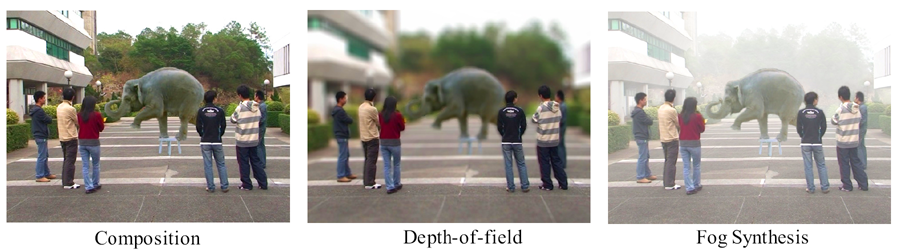

| IEEETVCG | ||
|
Re-filming with Depth-inferred Videos | ||
|
Guofeng Zhang Zilong Dong Jiaya Jia | ||
|
IEEE Transactions on Visualization and Computer Graphics, Vol. 15, No. 5, September 2009, pp. 828-840. | ||
|
 | ||
|
Abstract Compared to still image editing,
content-based video editing faces the additional challenges of maintaining
the spatio-temporal consistency with respect to geometry. This brings up
difficulties of seamlessly modifying video content, for instance,
inserting or removing an object. In this paper, we present a new video
editing system for creating spatio-temporally consistent and visually
appealing re-filming effects. Unlike the typical filming practice, our
system requires no labor-intensive construction of 3D models/surfaces
mimicking the real scene. Instead, it is based on an unsupervised
inference of view-dependent depth maps for all video frames. We provide
interactive tools requiring only a small amount of user input to perform
elementary video content editing, such as separating video layers,
completing background scene, and extracting moving objects. These tools
can be utilized to produce a variety of visual effects in our system,
including but not limited to video composition, "predator" effect,
bullet-time, depth-of-field, and fog synthesis. Some of the effects can be
achieved in real-time.
|
Paper (PDF, 9.28M) | |||
|
Video (Divx, 43.2M) | ||||
|
|
||||
|
BibTex: @article{zhang-2009-refilming,
|
||||